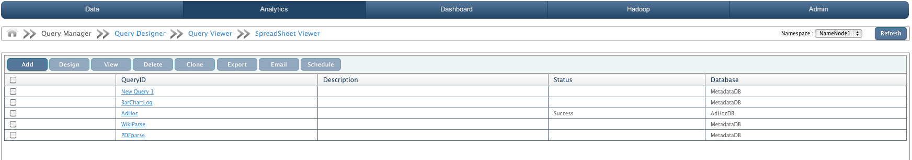
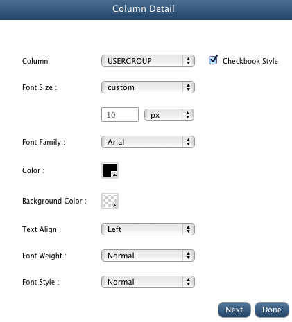
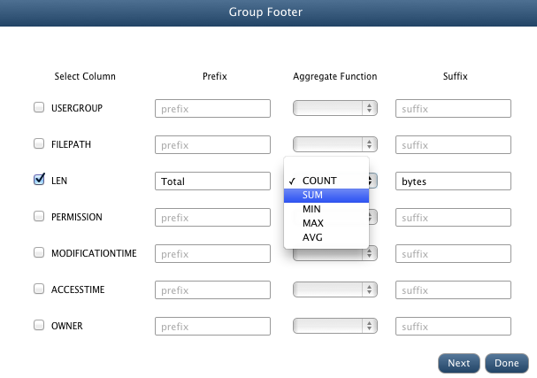
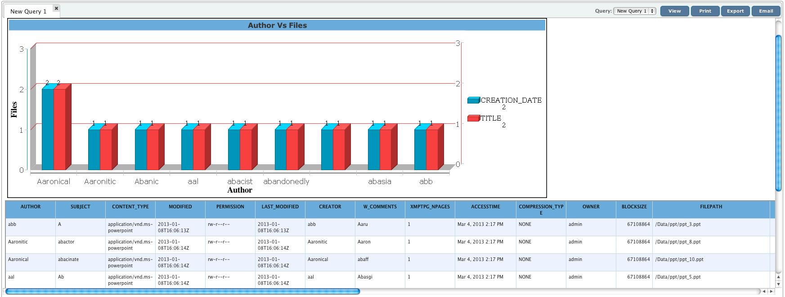
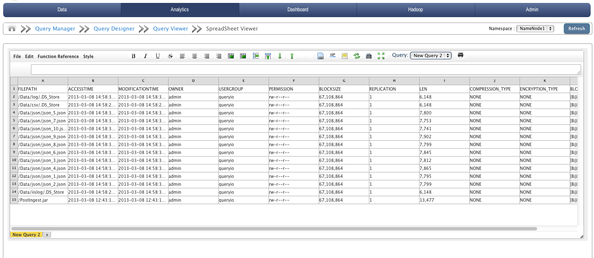

QueryIO supports on the fly metadata extraction from the files written onto the cluster. By default, the metadata for unregistered file types is saved in HDFS-METADATA table in the database. Query builder can be used to query the information extracted from the files.
All the saved queries can be viewed under Query manager. You can load previously saved queries by clicking on respective query ids.
Various actions can be performed on Hadoop SQL Queries:
Query designer is composed of two modules:
Query Builder allows us to define grouping, sorting and constructing criteria in a simple and direct way. It also allows you to save queries and use them again later.
Query builder is basically used to filter out the files available on the cluster. Files can be filtered on the basis of file types(table name).
Using report builder interface of QueryIO designer, you can build reports to format the result of queries.
To query extracted metadata, go to Analytics > Query Designer.
Here you can see query builder view. Using this view, you can construct queries that you want to execute on your data.
Click on SELECT textbox to select the names of the columns that you want to fetch with this query.
Click on FROM textbox to select the name of the table on which you want to perform the query.
Click on WHERE textbox to add any conditional clauses to your query. Only those records that fulfill the specified criteria will be included in the result.
For example, the query "SELECT OWNER,SUM(LEN) FROM HDFS-METADATA GROUP BY OWNER" would return the total storage space utilized by each user.
Click on ORDER BY textbox to select the names of the columns that you want to sort your result set by.
Click on HAVING textbox to provide conditions on aggregate functions.
Once you have constructed the query, click on Save button to save the generated query so that you can reuse it later.
You can load previously saved queries by clicking on respective query IDs in the Queries view.
Click on View to execute the query. On executing the query, you will be taken to Query Viewer.
Using report builder interface of QueryIO, you can build reports to present the contents of the queries that you can perform using the query builder interface.
Report builder comprises of three modules:
To specify the layout and design of various components of the report like report header, footer, etc.
To specify the layout and design of the charts that you want to add to you report.
Chart Preference allows you to create highly customized charts.
In the report preview section, you can see the preview of the report that will be generated with the current configuration.
This tutorial will show you how easily you can build reports using QueryIO.
To build reports, go to Analytics > Query Designer.
Create new query using Query Builder view or load existing query using Query Manager page.
Following are the steps to build customized reports:
The Report Header section generally contains the report title and other information you want to appear only at the beginning of the report. Charts in this section contain data for the entire report.
To customize report header, click on the Edit button adjacent to the Report Header block in the report designer view.
You can specify the contents of the report header in the Title edit box
In this window, you can also configure the styles that would be applied to the report header.
Click Done once you have configured all the properties as per your requirements.
It contains the part of the message used to indicate the start of a functional group of documents. Group Headers are useful and often necessary to make your report data clear and easily understood.
To customize group header, click on the Edit button adjacent to the Group Header block in the report designer view.
To group your result set by various columns respective column names using adjacent checkboxes.
You can also specify prefix and suffix for your group header value.
Lets say, if the group header content is "admin" and you have selected prefix to be "User: ", then the group header
content in the report will be
User: admin
Click Next to configure the styles that you want to apply to the selected group headers.
Click Next to specify custom formatting for group header content. Here you can specify the formatting of the data for various datatypes.
Click Done once you have configured all the properties as per your requirements.
The column header is the colored row of letters used to identify each column within the table. The column header row is located above the row one.
To customize column header, click on the Edit button adjacent to the Column Header block in the report designer view.
Click Done once you have configured all the properties as per your requirements.
Column details refer to the contents of the columns of non header rows in the table.
To customize column details, click on the Edit button adjacent to the Column Details block in the report designer view.

Click Done once you have configured all the properties as per your requirements.
It contains the part of the message used to indicate the end of a functional group of documents. Group Footers are useful and often necessary to make your report data clear and easily understood.
To customize group footer, click on the Edit button adjacent to the Group Footer block in the report designer view.

If you want to group footers by various columns, you can do it here. Select respective column names using adjacent checkboxes.
You can also select aggregate function to perform on the group footer content
You can also specify prefix and suffix for your group footer value.
Lets say, you have selected aggregate function to be SUM, prefix Total and
suffix bytes, then the group footer content in the report will like
Total 100 bytes where 100 is the sum of the values of the specified column in all the rows belonging to the current group.
Click Next to configure the styles that you want to apply to the selected group footers.
Click Next to specify custom formatting for group footer content.
Click Done once you have configured all the properties as per your requirements.
To customize report footer, click on the Edit button adjacent to the Report Footer block in the report designer view.
You can specify the contents of the report footer in the Title edit box
In this window, you can also configure the styles that would be applied to the report footer.
Click Done once you have configured all the properties as per your requirements.
Chart types supported are:
QueryIO provides you highly customized your charts and make them the way you want them to look. This feature drastically improves overall report.
Chart Preference UI is divided into three sections :
Chart Preferences include following configurable property categories
Note : For global chart preferences, all categories are shown and preview contains pie chart and line chart. For individual chart preferences, categories not applicable on respective chart are not displayed and preview contains selected chart type.
Here you can see the preview of the report that will be generated with the current configuration.
Query Viewer is used to display the result of the query. All View query requests from Query manager and designer are displayed in Query viewer. Hadoop SQL queries can be executed through viewer also.
Click on View to view generated report. Once the report is generated, it can be printed, exported to local system and can be mailed to registered users of QueryIO.
QueryIO provides support for spreadsheet viewer to process and further analyze the query results. Spreadsheet viewer provides a excel like spreadsheet with all the layers of business intelligence.
Result of all the queries executed can be viewed in SpreadSheet Viewer for further processing.
Spreadsheet viewer allows sheet creation, viewing, and editing processes. It also supports Undo & redo, Merge-able cells, Easy creation of custom formula functions and variables, full screen mode for better viewing, printing reports and many more features.
